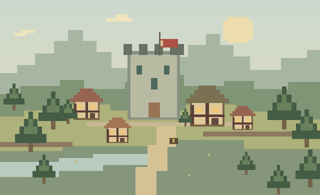
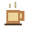
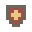
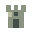
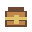

Tenho uma teoria: a melhor parte de organizar a vida é a sensação de que, desta vez, vai funcionar.
— ROBBUM BLOG PESSOAL. UM PEQUENO MUNDO.
Pergaminhos NerdCrônicas de um viajante
entre mundos.
Jogos, pensamentos e histórias pelo caminho.
Esta cidade é meu canto da internet. Deixe a armadura na entrada e fique à vontade.
6 crônicas no reinoSem nível mínimo

PORTÃO DA CIDADE · COORD. 00,00
Nem toda aventura precisa de uma espada. Às vezes, basta uma boa história.
VISITANTE, SEJA BEM-VINDO.ESCOLHA SEU PRÓXIMO DESTINO
O mapa do mundo
Cada lugar guarda um pedaço de mim. Onde vamos primeiro?
BibliotecaTodas as crônicasPortal ArcanoJogos & tecnologiaObservatórioFilmes & anime

TavernaCotidiano & notas
Arena das IdeiasFutebol & opiniões
Torre do ViajanteSobre mim
InventárioMeus favoritosSala do BardoMúsica & pausasUm reino em constante construção.O guarda do portão
Pode entrar. Não encontramos nada suspeito no seu histórico.
NOVOS REGISTROS DO VIAJANTE
Quadro de quests
As últimas crônicas deixadas no mural.
PUXE UMA CADEIRA
Ouvi na taverna…
Pensamentos pequenos demais para uma crônica.
Grandes o bastante para virar conversa.
Café ComumConsumível
+10 concentração
−5 vontade de dormir
Um recurso ancestral contra segundas-feiras.Uma pausa também conta como progresso.
+10 concentração
−5 vontade de dormir
Um recurso ancestral contra segundas-feiras.Uma pausa também conta como progresso.
Saudade de quando descobrir um site novo parecia encontrar uma passagem secreta.
— ROBB